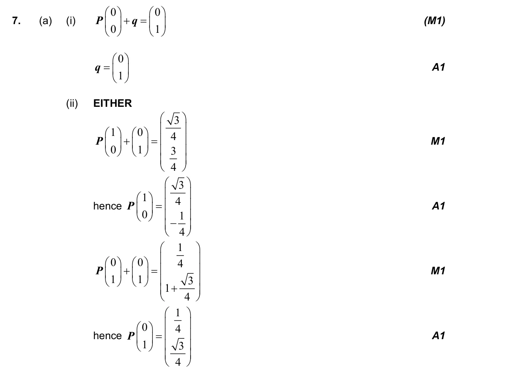
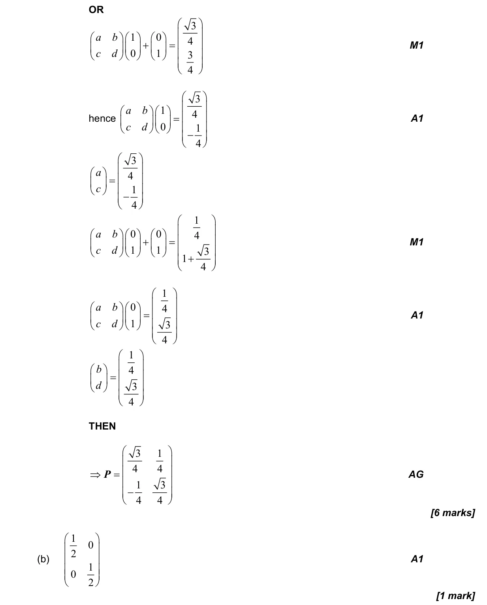
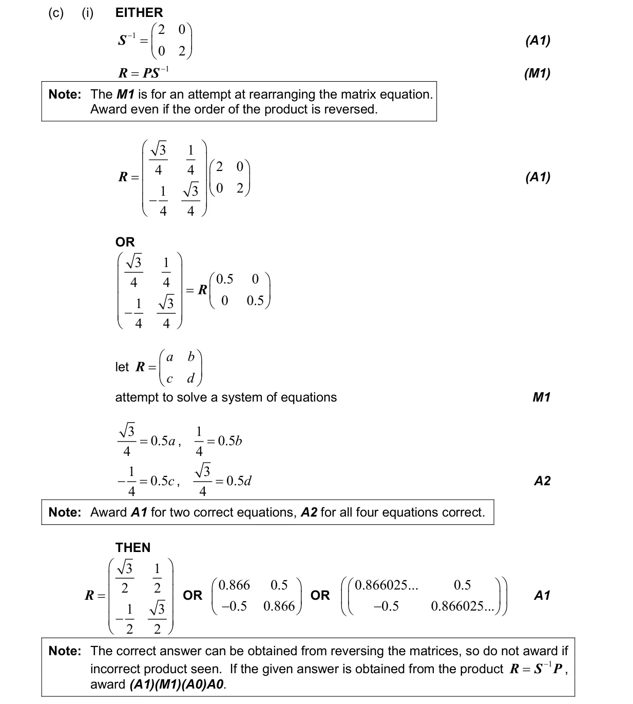
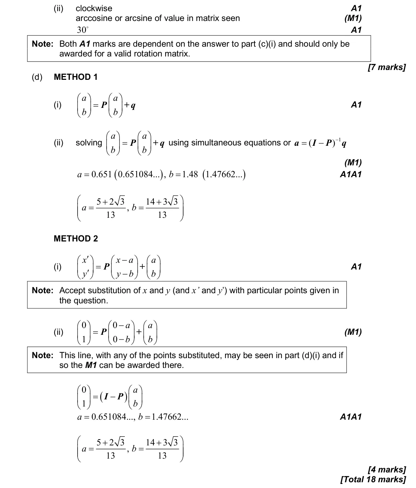

3.9 Matrix transformations of the plane1.14 Matrices: algebra, determinants, inverses and linear systems
Question

Markscheme




18 marks - May P2 TZ1 - Mathematics: Applications and Interpretation HL



